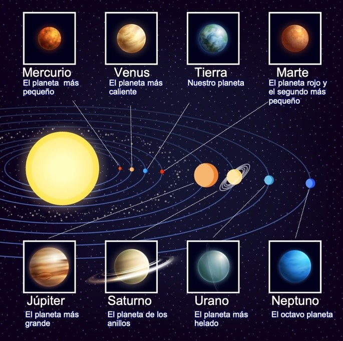
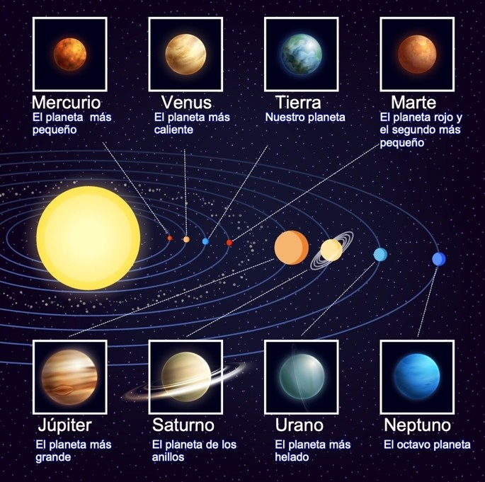

CONOCE LOS PLANETAS!!!
Imagen descriptiva de los planetas

Video Sistema Solar
El Sistema Solar | Videos Educativos para Niños

Presiona cada uno de los Botones para que conozcas más a fondo de cada uno de los planetas
El planeta más cercano al Sol. Es extremadamente caliente durante el día y frío por la noche debido a su falta de atmósfera.Tiene un parecido a la Tierra, pues su composición es del 70% de elementos metálicos y el 30% restante corresponde a silicatos. Además, al igual que sucede con la Luna, Mercurio presenta un gran número de impactos de meteoritos.

Conocido como el "gemelo de la Tierra" por su tamaño y composición similar, pero es un lugar inhóspito con temperaturas abrasadoras. Dentro de los Planetas del Sistema Solar, suele denominarse a Venus como el planeta “hermano de la Tierra” debido a su parecido, tanto en tamaño como en masa y su composición de tipo terrestre y rocoso.
Nuestro hogar, el único planeta conocido que tiene vida. Tiene agua, aire y temperaturas ideales para la vida. Se formó hace unos 4600 millones de años y su nombre proviene del latín “Terra”, deidad griega que corresponde a la feminidad y fecundidad. El 71% de su composición corresponde a la hidrosfera (agua), hecho diferencial que ha permitido la existencia y persistencia de la vida humana. Ningún otro planeta del Sistema Solar contiene tal nivel de líquido.

El "planeta rojo" con un terreno rocoso. Se exploró en busca de señales de vida.esde hace tiempo es comúnmente conocido como “planeta rojo”, fruto del color rojizo que adquiere por el óxido de hierro en la mayoría de su superficie. Su tamaño es casi la mitad del de la Tierra y su gravedad un 40% menor, lo cual lo hace prácticamente inhabitable según las últimas investigaciones de la NASA.

El planeta más grande con una gran mancha roja y muchas lunas, incluida la luna de Galileo, Europa. Recibe su nombre por el Dios Zeus de la mitología griega (Júpiter en mitología romana) es, precedido por el Sol, el planeta con mayor cuerpo celeste. Tiene un tamaño de 1300 veces mayor que la Tierra. Como cuerpo masivo gaseoso, su composición está formada básicamente de hidrógeno y hielo. Como dato curioso, es considerado el planeta más antiguo del Sistema Solar, precediendo al Sol inclusive.

Famoso por sus impresionantes anillos, que están hechos de hielo y roca. Es famoso este planeta del Sistema Solar por su imponente brillo procedente de sus anillos que rodean al planeta. Volviendo a Galileo, éste lo avistó por primera vez en el año 1610. Prácticamente, todo el planeta (un 96%) está formado por hidrógeno y el 3% restante de hielo.

Un planeta azul inclinado, conocido por su rotación lateral y anillos. Este planeta está considerado el primero en ser descubierto mediante un telescopio. Su composición es muy parecida a la de sus hermanos Saturno y Júpiter, puesto que está formado por helio e hidrógeno, así como de agua, amoníaco y metano, pero en cantidades mayores. Una peculiaridad de este planeta del Sistema Solar es su atmósfera, con las temperaturas más bajas de todo el Sistema, alcanzando la mínima de -224 grados Celsius.

Un mundo azul profundo con vientos furiosos, el último planeta del Sistema Solar. Neptuno fue descubierto hace unos dos siglos por Urbain Le Verrier, John Couch y Johann Galle, allá por el año 1847. No obstante, algunos historiadores y astrónomos sostienen que el célebre Galileo Galilei ya observó este planeta por el año 1612, dato todavía sin confirmar. El planeta Neptuno está compuesto de roca fundida, agua, metano, hidrógeno, hielo y amoníaco líquido.

| NOMBRE DEL PLANETA | TAMAÑO EN (KM) DEL PLANETA |
| JÚPITER | 142,984 KM. |
| SATURNO | 108,728 KM |
| URANO | 51,118 KM |
| NEPTUNO | 49,532 KM |
| LA TIERRA | 12,104 KM |
| VENUS | 12,104 KM |
| MARTE | 6,794 KM. |
| MERCURIO | 4, 880 KM |
Obra publicada con Licencia Creative Commons Reconocimiento Compartir igual 4.0